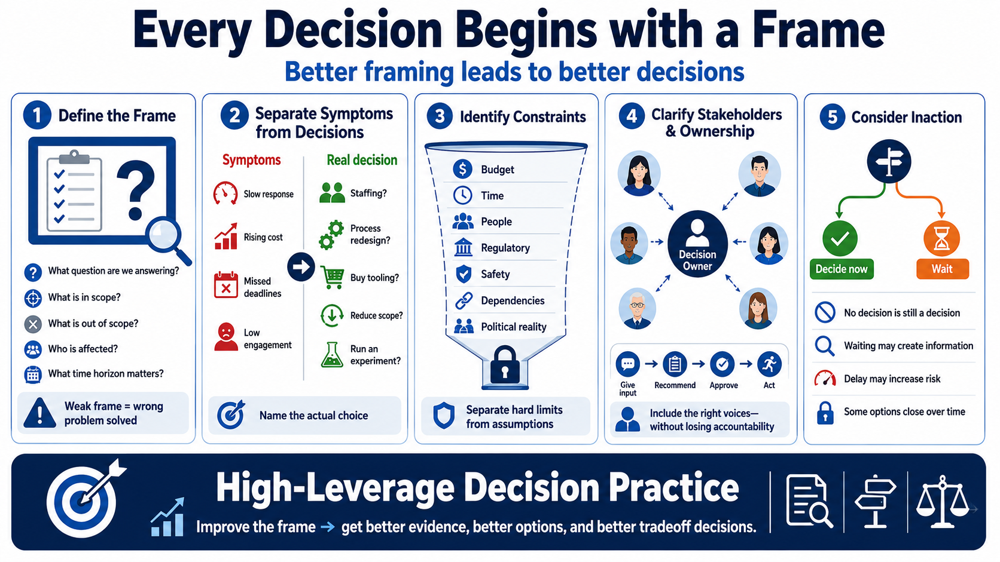

Framing the Decision
Connecting to LMS... Progress: in progress

Narration
Every decision begins with a frame. The frame defines what question is being answered, what is inside scope, what is outside scope, who is affected, who owns the decision, and what time horizon matters. A weak frame can make even careful analysis point in the wrong direction because the team is solving a question that is too vague, too narrow, or simply not the real choice.
Framing starts by distinguishing symptoms from decisions. A symptom might be slow incident response, rising cloud cost, missed deadlines, or learner disengagement. The decision is the choice the organization must make in response. Are we changing staffing, redesigning a process, buying tooling, reducing scope, changing priorities, or running an experiment? Until the actual choice is named, discussion often drifts between complaints, opinions, and partial fixes.
A good frame also identifies constraints. Constraints include budget, time, people, regulatory obligations, safety requirements, technical dependencies, and political realities. Naming constraints is not pessimism. It prevents the team from comparing options that cannot actually be executed. It also helps separate hard limits from assumptions that might be negotiable.
Stakeholders and decision ownership matter. A decision that affects operations, security, customers, learners, or frontline teams should not be framed only from the viewpoint of the person with the loudest voice. At the same time, endless consultation can blur accountability. A clear frame says who gives input, who recommends, who approves, and who is responsible for acting.
Finally, ask what happens if no decision is made. Inaction is still a choice, and it has consequences. Sometimes waiting creates useful information. Sometimes delay increases risk or closes options. The frame determines what evidence, options, and tradeoffs are considered, so improving the frame is one of the highest-leverage moves in decision practice.